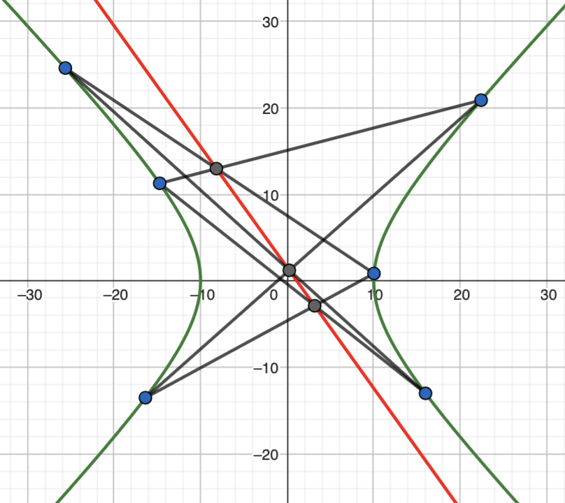
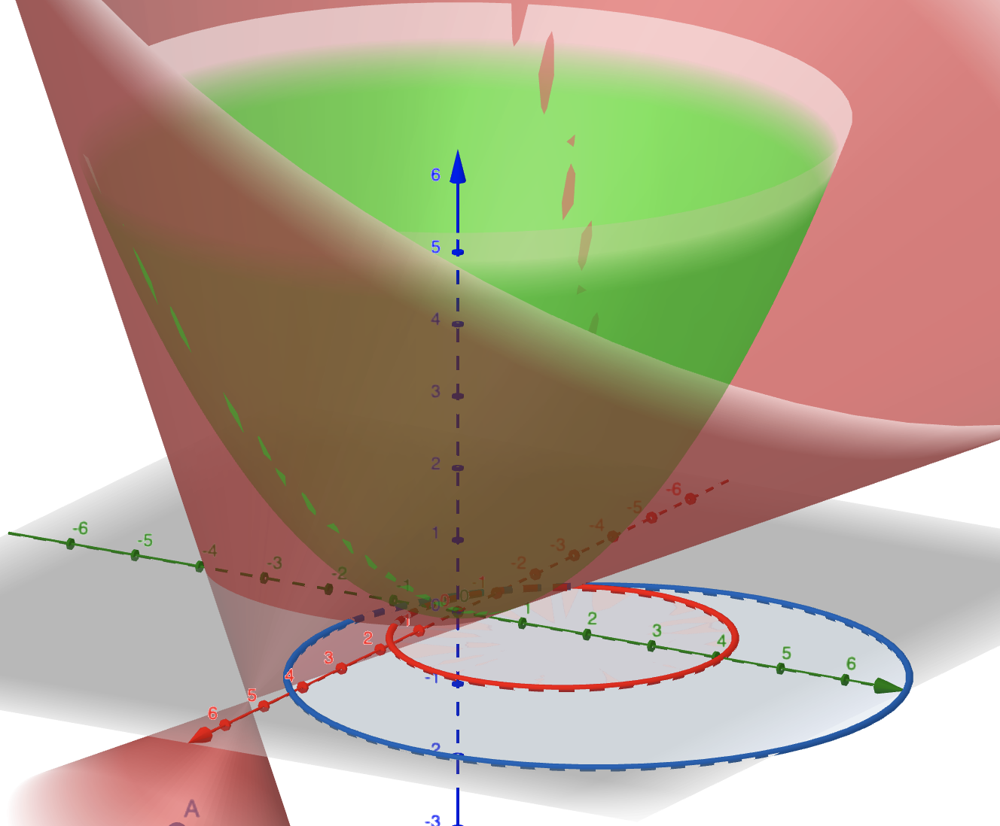
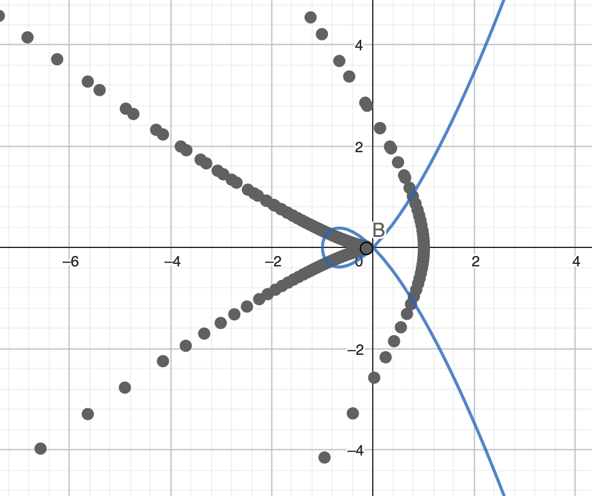

Spring 2023: Enumerative geometry
For MATH8100-011 (Enumerative Geometry), my students made visualizations of various things in enumerative geometry:
- Pappus' theorem visualized on a hyperpola (Frenly Espino) Geogebra link.

- Circles of Apollonius (Nikita Borisov) Geogebra

- The dual to a nodal elliptic curve (Zhong Zhang) Geogebra
 - The surface visualizing a pencil of conics with three nodal elements (Chenglu Wang) Code
- The conic passing through five chosen points (Alexander Kalbach) Mathematica notebook